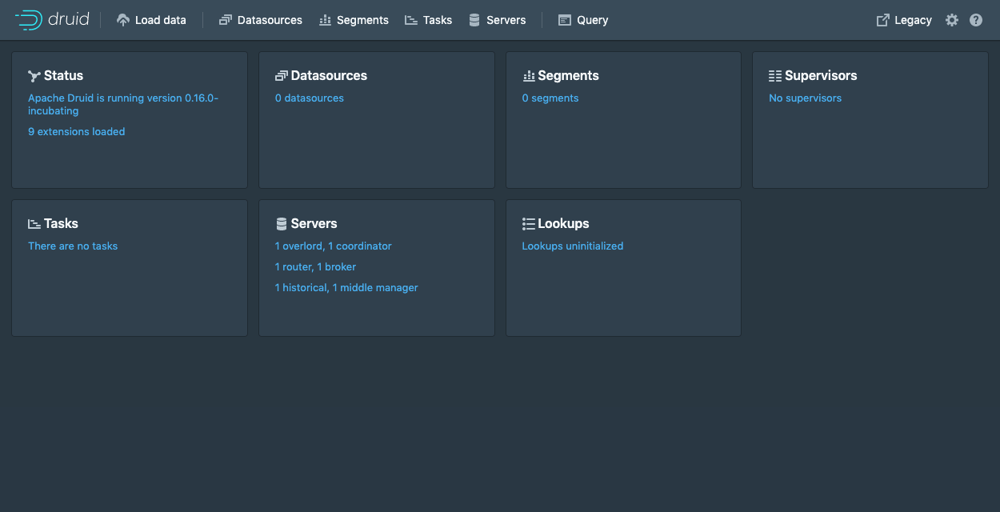

Tutorial: Run with Docker
This quickstart guides you through the steps to download the Apache Druid image from Docker Hub and deploy it on a single machine using Docker and Docker Compose. After you finish the initial setup, the cluster will be ready to load data.
Before beginning the quickstart, it is helpful to read the general Druid overview and the ingestion overview, because the tutorials refer to concepts discussed on those pages. It also helps to be familiar with Docker.
This tutorial assumes you will download the required files from GitHub. The files are also available in a Druid installation and in the Druid sources.
Prerequisites
Docker memory requirements
The default docker-compose.yml launches eight containers: Zookeeper, PostgreSQL, and six Druid containers based upon the micro quickstart configuration.
Each Druid service is configured to use up to 7 GiB of memory (6 GiB direct memory and 1 GiB heap). However, the quickstart will not use all the available memory.
For this setup, Docker needs at least 6 GiB of memory available for the Druid cluster. For Docker Desktop on Mac OS, adjust the memory settings in the Docker Desktop preferences. If you experience a crash with a 137 error code you likely don't have enough memory allocated to Docker.
You can modify the value of DRUID_SINGLE_NODE_CONF in the Docker environment to use different single-server mode. For example to use the nano quickstart: DRUID_SINGLE_NODE_CONF=nano-quickstart.
Getting started
Create a directory to hold the Druid Docker files.
The Druid source code contains an example docker-compose.yml which pulls an image from Docker Hub and is suited to be used as an example environment and to experiment with Docker based Druid configuration and deployments. Download this file to the directory created above.
Compose file
The example docker-compose.yml will create a container for each Druid service, as well as ZooKeeper and a PostgreSQL container as the metadata store.
It will also create a named volume druid_shared as deep storage to keep and share segments and task logs among Druid services. The volume is mounted as opt/shared in the container.
Environment file
The Druid docker-compose.yml example uses an environment file to specify the complete Druid configuration, including the environment variables described in Configuration. This file is named environment by default, and must be in the same directory as the docker-compose.yml file. Download the example environment file to the directory created above. The options in this file work well for trying Druid and for using the tutorial.
The single-file approach is inadequate for a production system. Instead we suggest using either DRUID_COMMON_CONFIG and DRUID_CONFIG_${service} or specially tailored, service-specific environment files.
Configuration
Configuration of the Druid Docker container is done via environment variables set within the container. Docker Compose passes the values from the environment file into the container. The variables may additionally specify paths to the standard Druid configuration files which must be available within the container.
The default values are fine for the Quickstart. Production systems will want to modify the defaults.
Basic configuration:
DRUID_MAXDIRECTMEMORYSIZE-- set Java max direct memory size. Default is 6 GiB.DRUID_XMX-- set JavaXmx, the maximum heap size. Default is 1 GB.
Production configuration:
DRUID_CONFIG_COMMON-- full path to a file for Druid common propertiesDRUID_CONFIG_${service}-- full path to a file for Druid service propertiesJAVA_OPTS-- set Java options
Logging configuration:
DRUID_LOG4J-- set the entirelog4j.xmlconfiguration file verbatim. (Example)DRUID_LOG_LEVEL-- override the default Log4j log levelDRUID_SERVICE_LOG4J-- set the entirelog4j.xmlconfiguration file verbatim specific to a service.DRUID_SERVICE_LOG_LEVEL-- override the default Log4j log level in the service specific log4j.
Advanced memory configuration:
DRUID_XMS-- set JavaXms, the initial heap size. Default is 1 GB.DRUID_MAXNEWSIZE-- set Java max new sizeDRUID_NEWSIZE-- set Java new size
In addition to the special environment variables, the script which launches Druid in the container will use any environment variable starting with the druid_ prefix as command-line configuration. For example, an environment variable
druid_metadata_storage_type=postgresql
is translated into the following option in the Java launch command for the Druid process in the container:
-Ddruid.metadata.storage.type=postgresql
Note that Druid uses port 8888 for the console. This port is also used by Jupyter and other tools. To avoid conflicts, you can change the port in the ports section of the docker-compose.yml file. For example, to expose the console on port 9999 of the host:
container_name: router
...
ports:
- "9999:8888"
Launching the cluster
cd into the directory that contains the configuration files. This is the directory you created above, or the distribution/docker/ in your Druid installation directory if you installed Druid locally.
Run docker-compose up to launch the cluster with a shell attached, or docker-compose up -d to run the cluster in the background.
Once the cluster has started, you can navigate to the web console at http://localhost:8888. The Druid router process serves the UI.

It takes a few seconds for all the Druid processes to fully start up. If you open the console immediately after starting the services, you may see some errors that you can safely ignore.
Using the cluster
From here you can follow along with the Quickstart. For production use, refine your docker-compose.yml file to add any additional external service dependencies as necessary.
You can explore the Druid containers using Docker to start a shell:
docker exec -ti <id> sh
Where <id> is the container id found with docker ps. Druid is installed in /opt/druid. The script which consumes the environment variables mentioned above, and which launches Druid, is located at /druid.sh.
Run docker-compose down to shut down the cluster. Your data is persisted as a set of Docker volumes and will be available when you restart your Druid cluster.